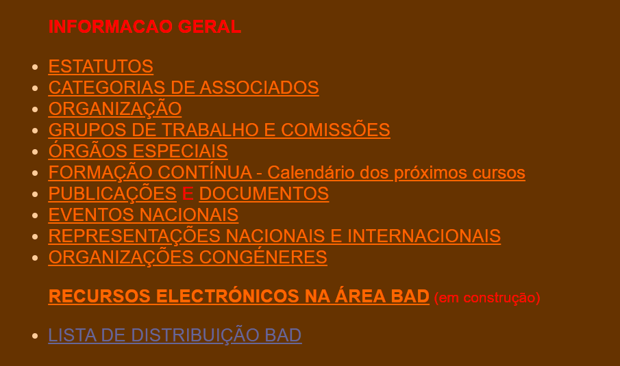
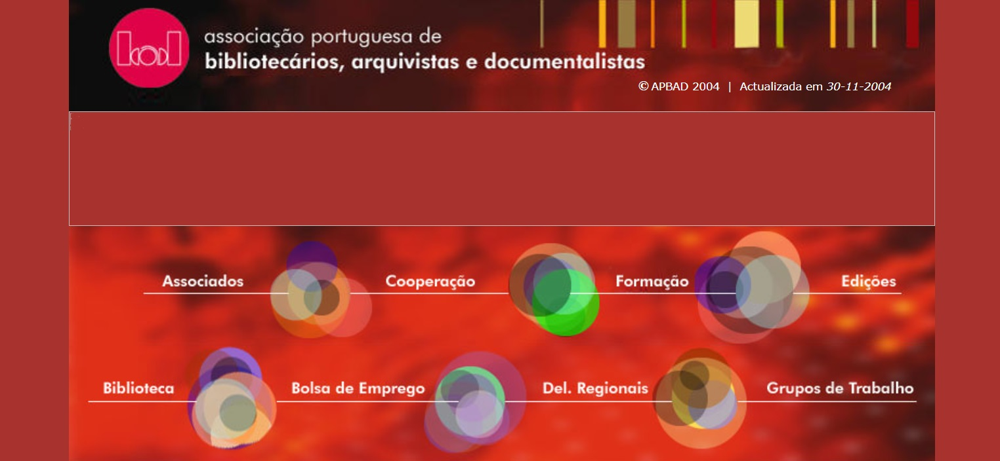

-
1996
O primeiro website da BAD foi criado pelo Grupo de Trabalho Tecnologias da Informação e mantido pelos Serviços de Documentação da Universidade do Minho, sendo Eloy Rodrigues o Webmaster. No Website podemos ver novo logo da BAD que é utilizado atualmente.

-
1997
O IV Encontro Nacional dos Arquivos Municipais realizou-se em Loulé, de 26 a 28 de fevereiro, com o tema Os Arquivos Municipais e a Administração Pública". Nesta página podemos ver uma versão do "Boletim Informativo" com o programa provisório.
Outras memórias
○ Oferta formativa da BAD sobre o CARDbase e indexação -
1998
A Carta de Aveiro é resultado do 3º Encontro Internacional de Bibliotecários de Língua Portuguesa e expressa a vontade de cooperação entre os países lusófonos na área da biblioteconomia. Paralelamente, realizou-se a reunião do Fórum dos Arquivistas Lusófonos. Estes encontros foram ligados ao 6º Congresso da BAD.
-
1999
A BAD quer explorar as potencialidades da Internet e, nesse sentido, adquiriu um servidor de listas de distribuição por correio electrónico que permite criar cinco listas e enviar informação selecionada para diversos perfis profissionais da BAD. 
-
2000
O Prémio Raúl Proença foi instituído em 1998 para distinguir trabalhos inéditos nas áreas da BAD.
Outras memórias
○ Site da BAD passa a ter um nome de domínio próprio: apbad.pt. Recorde-se que anteriormente era servido a partir dos Serviços de Documentação da Universidade do Minho.
○ Elementos gráficos, como por exemplo o gif animado do e-mail, ao modo dos sites dos primeiros anos da Web. -
2001
Nesta versão preservada seguimos o Mapa do site para recordar conteúdos publicados. Cada vez mais o site é o agregador de conteúdos para a comunidade BAD, como por exemplo, a Cronologia para a História da Associação, entre 1973 e 1996 ou o Código de ética adotado, em 25 de junho de 1999 pela BAD, INCITE e APDIS..
Outras memórias
○ Encontro As Misericórdias como fontes culturais e de informação, organizado pelo Arquivo Municipal de Penafiel.
○ 1º Encontro Internacional de Arquivos Empresariais, organizado pelo Grupo de Trabalho de Arquivos Empresariais. -
2002
Pelo Despacho do Ministério da Reforma do Estado e da Administração Públicas, "são aprovados o curso de técnicos profissionais de biblioteca e documentação e o curso de técnicos profissionais de arquivo, a funcionar na Associação Portuguesa de Bibliotecários, Arquivistas e Documentalistas, para efeitos de habilitação ao ingresso nas carreiras de técnico profissional de biblioteca e documentação e de técnico profissional de arquivo, respectivamente". (Despacho n.º 5122/2002, DIÁRIO DA REPÚBLICA - II SÉRIE N.º 56 - 7 de Março de 2002 - p. 4490-4491).
Outras memórias
○ Oferta formativa da BAD, em 2002. -
2003
É o 12º grupo da BAD, sendo o seu primeiro coordenador Francisco Berbedo. Na versão de outubro do site, o novo grupo está em destaque. Os Grupos de Trabalho da BAD foram iniciados em 1975 para responder a necessidades específicas de cooperação entre profissionais.
Outras memórias
○ Divulgação de notícias sobre arquivos, bibliotecas e cultura e uma curiosidade sobre o arquivo da Web.
○ Manifesto sobre a Preservação Digital. (Versão PDF).
○ 1º Encontro das BES no ISPA sob o tema “Qualidade conhecimento e inovação” (PDF). -
2004
É de 9 de dezembro de 2004 a mais antiga gravação arquivada do site da BAD renovado. Esta apresentação do site irá permanecer até 2021. A cópia não está completa, faltando imagens e alguns conteúdos, como é habitual em sites antigos. 
Outras memórias
○ 8º Congresso Nacional no Casino Estoril com o tema "Nas Encruzilhadas da Informação e da Cultura: (Re)Inventar a Profissão"
○ EXPOBAD - Salão Internacional dos Arquivos, Bibliotecas e Serviços de Informação Especializada
○ Manifesto “Em defesa do empréstimo público nas bibliotecas portuguesas!” (notícia na TSF)
○ Petição pública -
2005
A Conferência, realizada a 29 de setembro, na Torre do Tombo, foi organizada em colaboração com o Instituto Goethe. O objetivo desta parceria foi o intercâmbio e a partilha de informação sobre temas das ciências da informação entre profissionais de vários países, incluindo a Alemanha.
Outras memórias
○ Criação de Área reservada no site da BAD com login e palavra-passe em cumprimento dos objetivos da política editorial. -
2006
No final do ano, a BAD lançou uma campanha de atualização de dados individuais dos associados, através do preenchimento de um formulário on-line.
Outras memórias
○ Notícias e eventos divulgados no site da BAD.
○ Programa de Reestruturação da Administração Central do Estado (PRACE) e posição da BAD (versão PDF).
○ O Saber e o Saber Fazer, VI Encontro regional da BAD Açores, na Ribeira Grande (PDF). -
2007
O 9º Congresso da BAD realizou-se em Ponta Delgada, entre 28 e 30 de março, dedicado ao tema "Informação para a cidadania, o desenvolvimento e a Inovação".
-
2008
Como resultado das Eleições Nacionais para o Triénio 2008-2011, de 16 de janeiro, foi eleita a lista única candidata sob o lema “Intervir, Valorizar, Fortalecer" (em PDF). O site também informa acerca dos resultados das delegações regionais (em PDF).
Outras memórias
○ Edição do 1º número do Notícia BAD, para descarregar em versão PDF.
○ Parecer sobre o regime de carreiras BAD, de 2 de junho (PDF). -
2009
A 20 de Abril realizou-se a Assembleia Geral. Nos "Destaques" da página "Quem somos" foi disponibiliza informação do interesse dos associados, tais como o orçamento anual, relatórios e planos de atividade. Estas páginas datadas continuam a ser um manancial de informação.
-
2010
O 10º Congresso Nacional de BAD realizou-se no Centro Cultural Vila Flor, em Guimarães, entre 7 e 9 de Abril, com o tema “Políticas de Informação na Sociedade em Rede”.
-
2011
O boletim Notícia BAD passa a ser uma secção do Website, apbad.pt/noticia, e os conteúdos editados como páginas Web. Desde fevereiro de 2008, o boletim "Notícia BAD" era disponibilizado em versão PDF, destinada sobretudo à impressão. Agora, o boletim adapta o seu estatuto editorial ao ambiente Web que torna mais ágil a partilha em redes sociais.
Outras memórias
○ Mensagem da BAD alusiva ao Dia Mundial do Livro e dos Direitos de Autor
○ Arquivos do Algarve debatem Sistemas de Gestão Integrada da Informação
○ 10º Encontro Nacional de Arquivos Municipais - actas e notícias reunidas no Notícia BAD -
2012
11º Congresso da BAD realizou-se na Fundação Calouste Gulbenkian, entre 18 e 20 de outubro, sob o tema “Integração, Acesso e Valor Social“. Na entrada pode ler-se: "As Bibliotecas e os Arquivos afirmam-se, hoje como no passado, como plataformas privilegiadas para o acesso à informação e ao conhecimento. O site do evento apresenta uma cronologia dos congressos já realizados.
Outras memórias
○ Novos serviços web e as redes sociais da BAD e reestruturação da comunicação e imagem.
-
2013
Encontro realizado na Universidade de Aveiro, a 6 e 7 de junho, sob o lema "Partilha, critividade e engenho". O Grupo de Trabalho de Bibliotecas do Ensino Superior recuperou esta iniciativa, que teve a 1ª edição em 200 no ISPA, com o objetivo de ser um fórum de debate e aperfeiçoamento técnico e científico para todos os profissionais da BES.
Outras memórias
○ Progama de mobilidade do GT-BES A Minha Biblioteca é a Tua Biblioteca
○ Webinars da BAD como nova oferta formativa. Em qual destes participou?
○ Jornada de comemoração dos 40 anos em Coimbra -
2014
A BAD apoiou a campanha da associação europeia EBLIDA - European Bureau of Library, Information and Documentation Associations. O apoio concretizou-se numa Tomada de Posição Pública no Dia Mundial do Livro e do Direito de Autor, 23 de março.

Outras memórias
○ Jornada Gestão, preservação do acesso à informação digital, a 11 de setembro, em Ponte de Lima. -
2015
O 12º Congresso Nacional da BAD realizou-se em Évora, de 21 a 23 de Outubro, subordinado ao tema "Ligar. Transformar. Criar valor". As atas foram publicadas e preservadas no Arquivo.pt.

Outras memórias
○ Assembleia Geral e entrega do Prémio Raúl Proença na Biblioteca Nacional.
○ Diretório BAD lançado com informação sobre as Bibliotecas do Ensino Superior.
○ Campanha Somos Bibliotecas apresentada durante o congresso, em Évora (Notícia BAD e Petição Pública).
○ Jornada Gestão de Informação: interação entre arquivistas e informáticos, a 24 de abril, em Torres Vedras.
-
2016
Esta iniciativa nasceu com objetivo de reunir profissinais dos arquivos e das bibliotecas para promovam o desenvolvimento dos serviços de informação da região sul. O 1º Encontro BAD ao Sul realizou-se a 3 de Novembro na Biblioteca Municipal de Beja.
Outras memórias
○ Campanha de associados “Todos por +1”
○ 12º Encontro Nacional de Arquivos Municipais, em Castelo Branco, com o tema “Arquivos Municipais: o que há de novo?”
○ 3º Encontro das BES, no Porto, sob o lema “Conhecer, Colaborar e Evoluir”
-
2017
A 1ª edição da CIGIA foi organizada pelo Grupo de Trabalho de Gestão de Documentos de Arquivo. Esta iniciativa teve lugar no Teatro Alba em Albergaria-a-Velha, entre os dias 3 e 4 de novembro, e teve por tema orientador "Governança da informação e cidadania".

Outras memórias
○ 1ª Conferência do Grupo de Trabalho de Sistemas de Informação em Museus, com o CIDHEUS na Universidade de Évora
○ XVI Encontro Regional da BAD Açores, no auditório da NONAGON, sob o lema: Bibliotecas, Arquivos e Museus: Que percursos?
○ 2º Encontro BAD ao Sul, em São Brás de Alportel, sob lema "A criar comunidades"
-
2018
A nova sede da BAD, na Praça Dr. Nuno Pinheiro Torres, 10 A, junto ao Centro Comercial Fonte Nova, em Benfica, foi inauagurada no 45º aniversário da associação, no dia 8 de dezembro.
Outras memórias
○ 13º Congresso Nacional no Fundão com o tema "Sustentabilidade e formação"
○ Sessão pública conjunta da BAD e da APDIS "Agenda 2030 e o Desenvolvimento Sustentável", em em Lisboa e em Braga.
○ 3º Encontro BAD ao Sul no Museu Municipal, em Ferreira do Alentejo, a 29 de maio.
○ Lançamento do website Bibliotecas para o Desenvolvimento e a Agenda 2030. -
2019
Intervenção política e social da BAD defendendo uma maior interação entre os vários setores da cultura e o incremento das sinergias entre património, museus, bibliotecas, arquivos, artes performativas, cinema e audiovisual. A Concentração dos profissionais da Cultura em Lisboa teve a intervenção da Presidente da BAD.
Outras memórias
○ Diretiva Europeia sobre Direitos de Autor - Tomada de posição pública da BAD
○ 6º ano do Programa de mobilidade nas BES e agregação no site dos programas desde 2014.
○ Plano de atividades 2019 (PDF).
-
2020
A 8 de julho de 2020, em plena pandemia da Covid-19, a Delegação Norte lançou as sessões online "Conversas com Norte". Com uma periodicidade mensal, na 2ª quarta-feira.
Outras memórias
○ Tomada de Posição: Arquivos e Bibliotecas durante a pandemia
○ BAD permite acesso livre às gravações dos Webinars
○ Interrupção das formações presenciais
-
2021
Em julho, a BAD anunciou a criação do Prémio BAD Maria José Moura que tem por objetivo reconhecer profissionais da área BAD e homenagear uma figura marcante na história da associação.
Outras memórias
○ Plano de Recuperação e Resiliência (PRR) e Bibliotecas, Arquivos e Museus durante a pandemia de Covid-19
○ Recomendações para as Bibliotecas de Ensino Superior pelo GT-BES
-
2022
Em janeiro entra em produção a nova versão do site da BAD. O nome de domínio mudou de apbad.pt para bad.pt. Recorde-se que o site anterior foi implementado em 2004.
-
2023
O 14º Congresso Nacional realiza-se na Universidade do Algarve, de 3 a 5 de maio, com o tema "Comunidades e Profissionais para o Futuro: Agir Hoje". Nesta edição comemora-se os 50º aniversário da BAD..